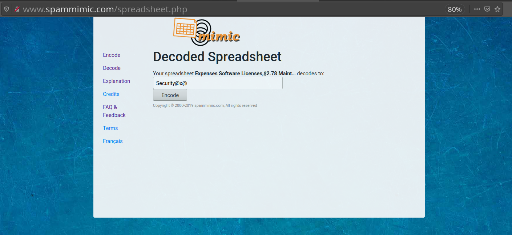
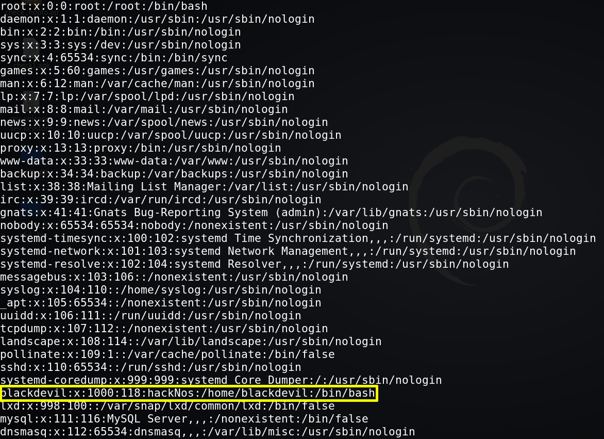

Paste the following lines: Expenses Software Licenses,$2.78 Maintenance,$68.87 Mortgage Interest,$70.35 Advertising,$9.78 Phone,$406.80 Insurance,$9.04
Click on “Decode”.

2. List all system users.
www-data@hacknos:/var/www/html/websec$ cd/ www-data@hacknos:/$ ls www-data@hacknos:/$ cd etc www-data@hacknos:/etc$ ls www-data@hacknos:/etc$ catpasswd
Output: 
Generally, a normal user has UID greater or equal to 1000. This gives you a hint that the user with UID >=1000 is a normal user and users with UID <1000 are system users.
It seems the user is “blackdevil”, so let's try to get a session with it.